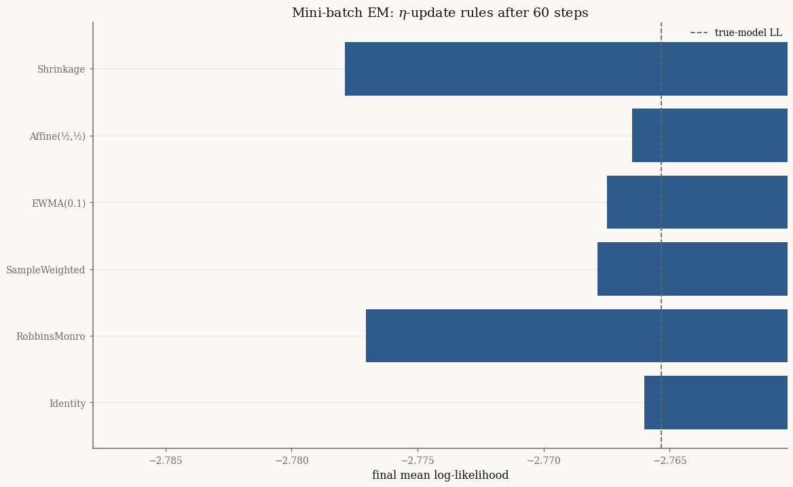
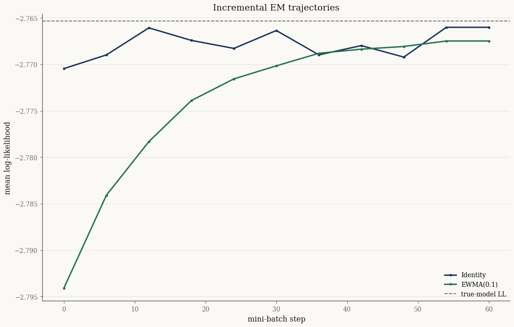

Incremental (mini-batch) EM#
When data arrives in a stream, or is too large to sweep each iteration,
IncrementalEMFitter updates the model from mini-batches. Each step
computes the batch expectation parameters \(\hat\eta\), then blends them into a
running estimate \(\eta_t\) through an \(\eta\)-update rule before the M-step.
The choice of rule controls the bias/variance and the forgetting behaviour of
the online estimate.
import jax
jax.config.update("jax_enable_x64", True)
import jax.numpy as jnp
import numpy as np
from normix import (
NormalInverseGaussian,
IdentityUpdate, RobbinsMonroUpdate, SampleWeightedUpdate,
EWMAUpdate, AffineUpdate, Shrinkage, eta0_from_model,
)
from normix.fitting.em import IncrementalEMFitter
from normix.utils.plotting import set_theme
set_theme()
np.set_printoptions(precision=4, suppress=True)
Setup#
true = NormalInverseGaussian.from_classical(
mu=jnp.array([0.0, 0.0]),
gamma=jnp.array([0.4, -0.3]),
sigma=jnp.array([[1.0, 0.3], [0.3, 1.0]]),
mu_ig=1.0, lam=1.5)
X = true.rvs(20_000, seed=0)
init = NormalInverseGaussian.default_init(X)
key = jax.random.PRNGKey(0)
The six \(\eta\)-update rules#
A rule maps the previous estimate \(\eta_{t-1}\) and the batch estimate \(\hat\eta\) to the new \(\eta_t\). normix ships six:
Rule |
Update \(\eta_t\) |
|---|---|
|
\(\hat\eta\) (no memory) |
|
step-size \(\propto 1/(t + \tau_0)\) |
|
weight by cumulative sample count |
|
exponential moving average, weight \(w\) |
|
\(a + b\,\eta_{t-1} + c\,\hat\eta\) |
|
wrap a base rule, shrink toward \(\eta_0\) |
rules = {
"Identity": IdentityUpdate(),
"RobbinsMonro": RobbinsMonroUpdate(tau0=10.0),
"SampleWeighted": SampleWeightedUpdate(),
"EWMA(0.1)": EWMAUpdate(w=0.1),
"Affine(½,½)": AffineUpdate(b=0.5, c=0.5),
"Shrinkage": Shrinkage(IdentityUpdate(), eta0_from_model(init), tau=0.3),
}
target = float(true.marginal_log_likelihood(X))
print(f"target mean log-likelihood (true model): {target:.4f}\n")
finals = {}
for name, rule in rules.items():
fitter = IncrementalEMFitter(
batch_size=512, max_steps=60, eta_update=rule,
e_step_backend="cpu", m_step_backend="cpu")
res = fitter.fit(init, X, key=key)
finals[name] = float(res.model.marginal_log_likelihood(X))
print(f"{name:16s} final mean log-lik = {finals[name]:.4f}")
target mean log-likelihood (true model): -2.7653
Identity final mean log-lik = -2.7660
RobbinsMonro final mean log-lik = -2.7770
SampleWeighted final mean log-lik = -2.7679
EWMA(0.1) final mean log-lik = -2.7675
Affine(½,½) final mean log-lik = -2.7665
Shrinkage final mean log-lik = -2.7779
import matplotlib.pyplot as plt
fig, ax = plt.subplots()
names = list(finals)
ax.barh(names, [finals[n] for n in names], color="#2D5A8A")
ax.axvline(target, color="0.4", ls="--", lw=1.2, label="true-model LL")
ax.set_xlabel("final mean log-likelihood")
ax.set_xlim(min(finals.values()) - 0.01, target + 0.005)
ax.set_title("Mini-batch EM: $\\eta$-update rules after 60 steps")
ax.legend()
plt.show()

All rules climb to within a fraction of a nat of the true-model likelihood after
just 60 mini-batches. They differ mainly in how they get there — the averaging
rules (SampleWeighted, EWMA, Affine) damp the per-step noise, while
Identity and the decaying RobbinsMonro step are more volatile.
Following a single trajectory#
With verbose=1 the fitter records the log-likelihood at diagnostic
checkpoints, which we can plot to see the mini-batch ascent of two contrasting
rules:
fig, ax = plt.subplots()
for name, rule in [("Identity", IdentityUpdate()),
("EWMA(0.1)", EWMAUpdate(w=0.1))]:
res = IncrementalEMFitter(
batch_size=512, max_steps=60, eta_update=rule, verbose=1,
e_step_backend="cpu", m_step_backend="cpu").fit(init, X, key=key)
ll = np.asarray(res.log_likelihoods)
ax.plot(np.linspace(0, 60, len(ll)), ll, marker="o", ms=3, label=name)
ax.axhline(target, color="0.4", ls="--", lw=1.2, label="true-model LL")
ax.set_xlabel("mini-batch step"); ax.set_ylabel("mean log-likelihood")
ax.set_title("Incremental EM trajectories")
ax.legend()
plt.show()
EM [incremental] NormalInverseGaussian: rule=IdentityUpdate, batch_size=512, max_steps=60, inner_iter=1
step 6/60 LL=-2.770447 |Δparams|=3.6950e-01
step 12/60 LL=-2.768975 |Δparams|=3.6683e-01
step 18/60 LL=-2.766060 |Δparams|=5.4291e-01
step 24/60 LL=-2.767411 |Δparams|=7.0969e-01
step 30/60 LL=-2.768273 |Δparams|=2.6339e-01
step 36/60 LL=-2.766347 |Δparams|=8.0837e-01
step 42/60 LL=-2.768970 |Δparams|=6.6540e-01
step 48/60 LL=-2.767970 |Δparams|=4.0360e-01
step 54/60 LL=-2.769208 |Δparams|=5.3523e-01
step 60/60 LL=-2.766001 |Δparams|=2.6125e+00
Done (3.96s), final LL=-2.766001
EM [incremental] NormalInverseGaussian: rule=EWMAUpdate, batch_size=512, max_steps=60, inner_iter=1
step 6/60 LL=-2.794093 |Δparams|=2.0370e-01
step 12/60 LL=-2.784090 |Δparams|=1.1905e-01
step 18/60 LL=-2.778310 |Δparams|=4.6644e-02
step 24/60 LL=-2.773891 |Δparams|=3.8607e-02
step 30/60 LL=-2.771556 |Δparams|=2.2443e-02
step 36/60 LL=-2.770150 |Δparams|=3.9477e-02
step 42/60 LL=-2.768800 |Δparams|=2.7101e-02
step 48/60 LL=-2.768355 |Δparams|=2.6078e-02
step 54/60 LL=-2.768068 |Δparams|=3.9422e-02
step 60/60 LL=-2.767476 |Δparams|=4.1363e-02
Done (3.86s), final LL=-2.767476

The Identity rule is noisier because it discards all history; EWMA
smooths the estimate across batches.
Shrinkage toward a target#
Shrinkage wraps any base rule and pulls the estimate toward a fixed
\(\eta_0\) — a regularizer for small batches or noisy streams. The targets module
builds sensible \(\eta_0\) values:
eta0_from_model(model)— the model’s own current expectation parameters.eta0_isotropic(model, sigma2)— isotropic covariance target.eta0_diagonal(model, diag)— diagonal covariance target.eta0_with_sigma(model, Sigma0)— explicit covariance target.
from normix import eta0_isotropic
rule = Shrinkage(RobbinsMonroUpdate(tau0=10.0), eta0_isotropic(init, 1.0), tau=0.5)
res = IncrementalEMFitter(
batch_size=256, max_steps=60, eta_update=rule,
e_step_backend="cpu", m_step_backend="cpu").fit(init, X, key=key)
print("shrinkage-to-isotropic final mean log-lik:",
float(res.model.marginal_log_likelihood(X)))
shrinkage-to-isotropic final mean log-lik: -2.8295220213379735
Takeaways#
IncrementalEMFitterupdates from mini-batches;fit(model, X, key=...)needs a PRNG key for batch sampling.Six \(\eta\)-update rules trade off memory vs responsiveness; averaging rules reduce variance,
Identityreacts fastest.Shrinkage+ theeta0_*targets regularize the online estimate toward a chosen structure.
Next: Initialization and multi-start looks at where the EM loop starts and how to make fits robust to local optima.